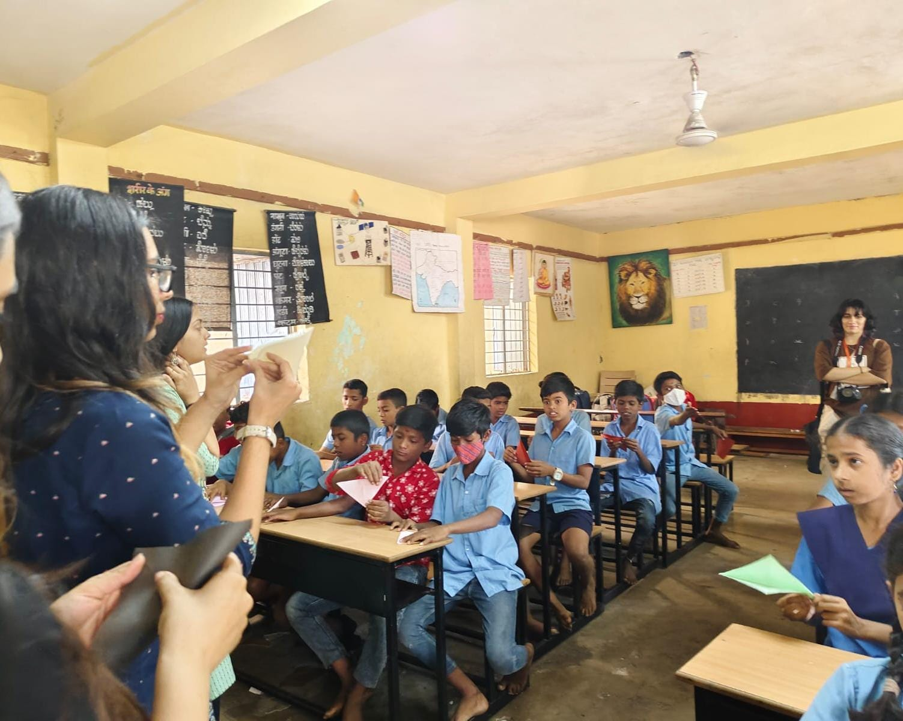

Volunteered at a nearby government school as a part of the Outreach Program, conducting sessions with the 6th-7th graders about the importance of peer support and peer behaviour. We conducted multiple student engaging activities that helped strengthen the unity and oneness amongst them.

introduction to various modes of conducting lie-detection tests, Cognitive Approaches, strain theory and the Gini Coefficient, Social Learning Theory and other aspects of criminal psychology

Got the opportunity to talk to a counselor from the NGO organisation called ' Akhil Bhartiya Mahila Parishad' in Rewari, Haryana. I got to witness a case personally and observed how the counselor handled it as well.

Volunteered for the Mental health week two years in a row and helped raise the importance for mental well-being. Also assisted in managing stalls to raise money for this cause